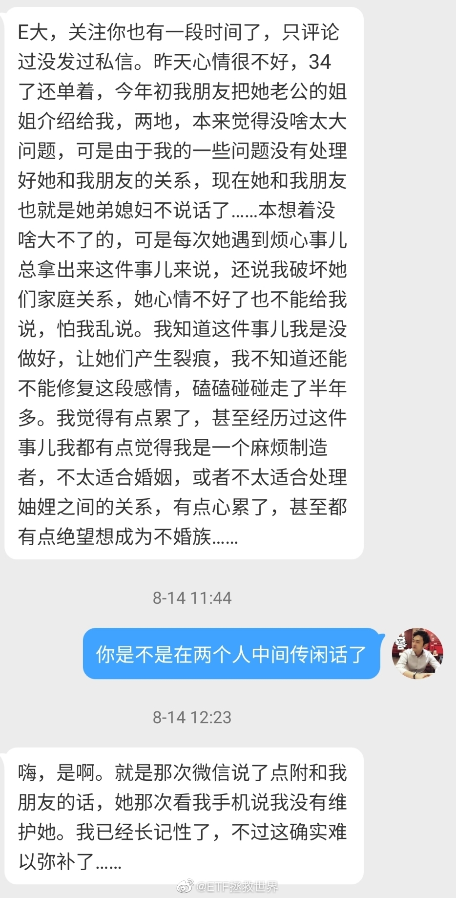

如果不想惹麻烦，第一守则，不要在背后说别人坏话。早晚会传到那个人耳朵里。
最好多在背后夸你真正喜欢的人。早晚他也会知道的。
第二守则，别人跟你说秘密，在你这里就到了终点，不要告诉第三个人。更好的做法是根本不听别人的秘密。
第三守则，如果你有不想让别人知道的秘密，不要告诉任何人。因为只要有两个人知道，那么它就不再是秘密了。
最好多在背后夸你真正喜欢的人。早晚他也会知道的。
第二守则，别人跟你说秘密，在你这里就到了终点，不要告诉第三个人。更好的做法是根本不听别人的秘密。
第三守则，如果你有不想让别人知道的秘密，不要告诉任何人。因为只要有两个人知道，那么它就不再是秘密了。
- 